| Explicacion |
Imagen |
|
1.
Escriba el nombre de usuario y contraseña y a continuación
haga clic en el botón Iniciar sesión. El
sistema asignará los privilegios adecuados.
|
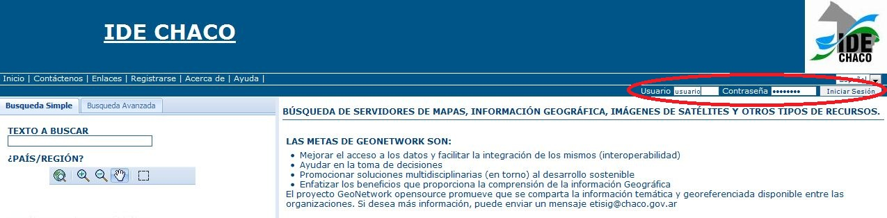
|
|
2.
Haga clic en el link Administrador.
|
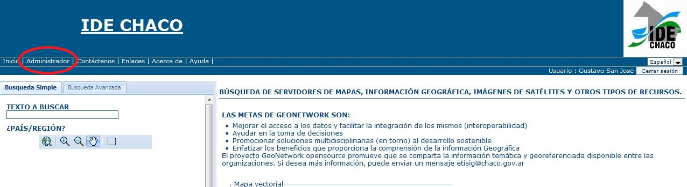
|
|
3. Hacer clic en
el link Nuevo Metadado.
|
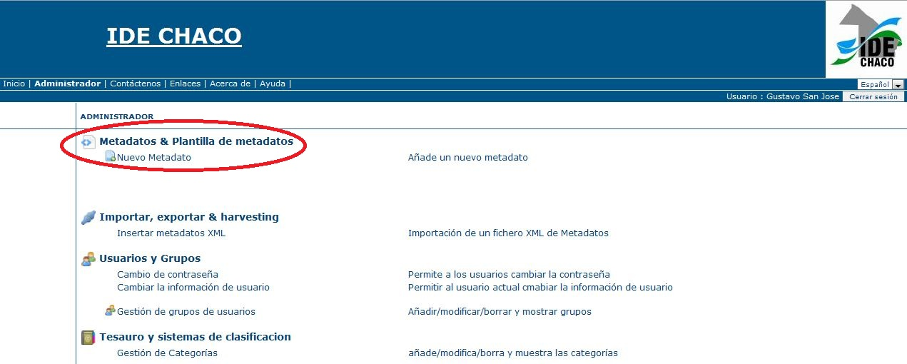
|
|
4. Seleccionar la
plantilla de metadatos Perfil
IDE Chaco (la versión más actual)
y el Grupo al que pertenece y luego presionar el botón
Crear.
|
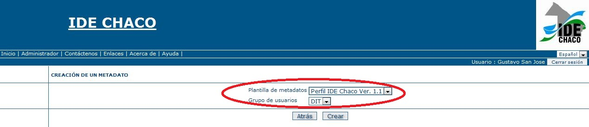
|
|
5.
Basado en la norma de metadatos ISO 19115. El Perfil IDE Chaco
ofrece el conjunto mínimo de elementos de metadatos
recomendados para describir correctamente un conjunto de datos
espaciales. Estos campos de metadatos se muestran en cinco
categorías diferentes: identificación, distribución,
sistema de referencia, calidad de los datos y metadatos. Una
sección separada para manejar el resumen gráfico de
los conjuntos de datos es accesible a través del botón
en miniatura, en la parte superior y en la parte inferior de la
forma de metadatos.
|
|
6.
Tenga en cuenta que en cada sección, los campos marcados
con símbolo [*] son obligatorios. La definición
estándar de cada campo puede ser leído moviendo el
mouse sobre el nombre del elemento. Los campos son o campos de
texto libre o listas desplegables. Texto libre significa que usted
puede escribir cualquier texto en ese campo. Listas desplegables
permiten seleccionar sólo una opción de la lista. Se
puede agregar múltiples campos de la misma haciendo clic
sobre el símbolo [+] situado junto al elemento. También
puede eliminar los campos existentes de la forma haciendo clic
sobre el símbolo [x] al lado del elemento, obviamente los
campos obligatorios no se pueden eliminar.
|
|
7.
Sección de identificación. Esta sección
contiene los elementos de identificación obligatoria de
información que específicamente se describen los
datos. Se incluye la cita de los recursos (título, fecha de
creación o publicación, edición, forma de
presentación), y un resumen del conjunto de datos.
|
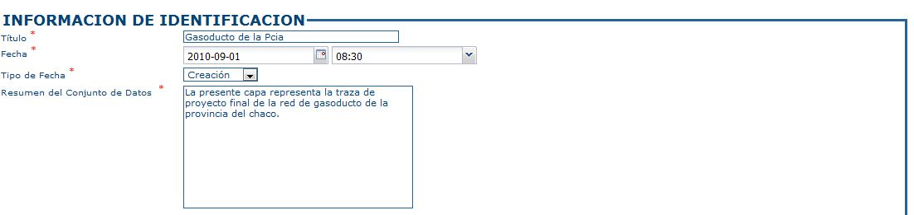
|
|
8.
Sección Punto de contacto
. La persona (s) y / u organización (es) asociado (s) a los
datos, así como sus datos de contacto, se especifican en el
punto de contacto junto con la identificación de la función
que mejor califica la función realizada por la parte
responsable.
Proporcionar información de por lo
menos uno de los primeros dos elementos: Nombre Personal, Nombre
de la Organización, seleccionar el papel desempeñado
por la parte responsable de la lista desplegable del campo Rol del
Punto de Contacto, proporcionar todos los datos de contacto a
disposición de la parte responsable.
|
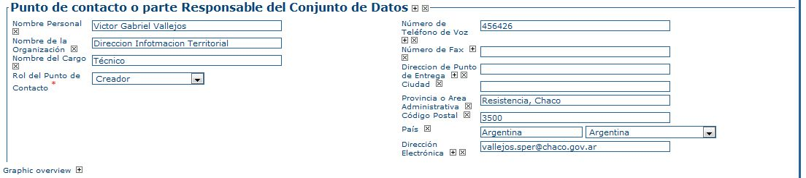
|
|
9. Sección
de Palabras descriptoras. Elementos de las palabras clave y
descripción.
Seleccionar el tipo de la (s) palabra
(s) en la lista desplegable del campo Tipo que incluye
Disciplina, Lugar, Tema y Estrato. Las palabras clave del tipo
disciplina debe ser seleccionado de las palabras clave GCMD
Ciencia.
|
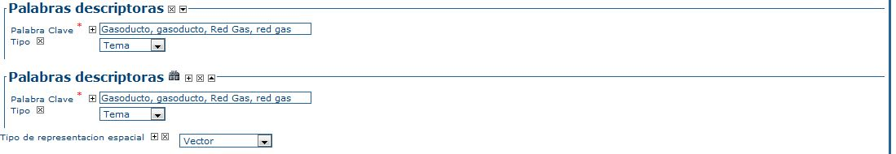
|
|
10.
Seleccionar el Tipo de representación espacial de la lista
desplegable.
|
|
|
11.
Sección de Escala equivalente.
Esta sección proporciona información acerca de la
escala (1:250000, por ejemplo se coloca el denominador 250000), el
idioma, el juego de caracteres utilizados en el recurso y la lista
de categorías temáticas ISO.
|
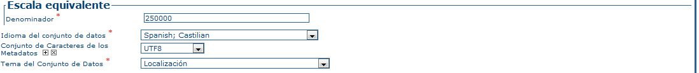
|
|
12.
Sección de
Extensión.
Aquí se describe la extensión temporal y espacial
del conjunto de datos. La medida temporal se define por la fecha
de inicio y finalización de la recolección de datos.
La extensión espacial (Caja Envolvente Geográfica)
se expresa en términos de coordenadas geográficas de
la zona de interés oa través de la selección
de un país o región de una lista predefinida.
Se
puede agregar texto libre con información complementaria
como último elemento para completar la sección de
datos de identificación.
|
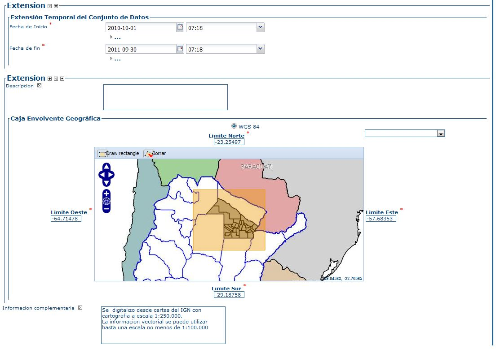
|
|
13.
Sección Información de
Distribución. En esta sección
se describen los elementos para acceder a recursos en línea.
Para
vincular una dirección web
(i). Escriba la dirección
URL para la ubicación de los recursos en línea;
(iii).
Proporcionar una descripción de los recursos en línea.
|
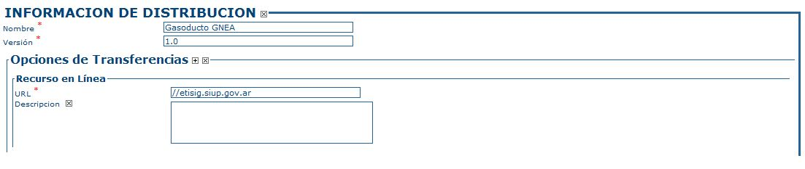
|
|
14. Secciones
Informacion del Sistema de Referencia y Calidad de los Datos.
La Sección de Información del Sistema de Referencia
describe el sistema de referencia espacial de un conjunto de
datos. Contiene un elemento para identificar el nombre del sistema
de referencia utilizado.
La sección de Calidad de
los Datos ofrece una evaluación general de la calidad de
los datos. Se puede describir la calidad en los diferentes niveles
jerárquicos: serie, conjunto de datos, características,
atributos, etc En esta sección también contiene una
declaración, que proporciona una explicación general
sobre los procesos de producción (linaje) utilizado para la
creación de los datos.
|
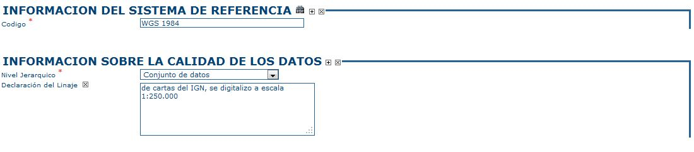
|
|
15.
Sección de Metadatos.
Esta sección contiene un conjunto de elementos que
describen la información de los metadatos. Proporciona el
identificador único para el registro de metadatos (asignado
automáticamente), el lenguaje y el conjunto de caracteres
utilizados para la descripción, la fecha en que el registro
de metadatos se creó, y el nombre y versión del
estándar que se utiliza para describir los datos. Esta
sección también registra los detalles de la persona
responsable de la información de metadatos (autor de
metadatos) y que puede ser también el punto de contacto
para obtener información de datos.
|
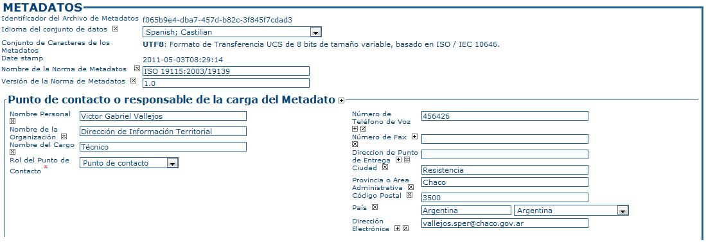
|
|
16. Seleccionar
Metadatos en el campo Tipo,
y luego presionar el botón Guardar.
En
caso de presentarse errores el sistema los informará.
|
|